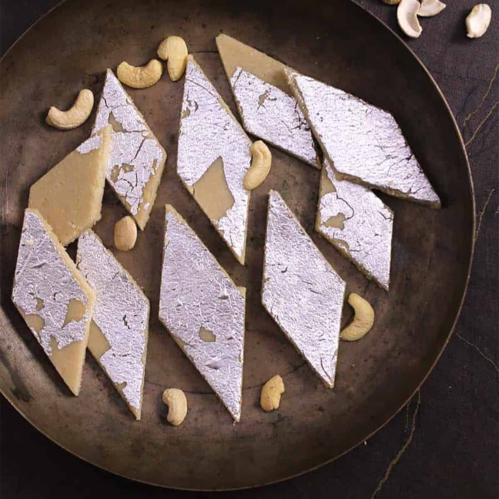

Gulab Jamun
Ingredients
- 1/2 tin Nestlé MILKMAID
- 2 cups (200 gm ) Flour
- 600 gm, grated Paneer
- 200 gm Sooji/Rava
- 1½ tsp Baking Powder
- 1½ tsp Baking Soda
- for frying Oil
- 2 litres Water
- 1 kg Sugar
- 6-8 nos, coarsely crushed Cardamom
Recipe
- Boil sugar and water to prepare syrup remove from fire; add cardamom and keep aside to cool.
- In a mixing bowl put the flour, paneer, sooji, Nestlé MILKMAID , baking powder and baking soda. Mix gently to make a soft dough, do not knead too much.
- Divide the mixture into 30-35 portions and gently roll into round gulab jamuns. Fry in the oil at very low flame till golden brown in color.
- Keep putting the fried gulab jamuns in the prepared sugar syrup, once all the gulab jamuns are in the sugar syrup bring it to a boil and remove from flame.
- Serve warm.
Kaju Barfi
Ingredients
- 1/2 cup powdered cashews
- 1/2 cup water/li>
- 1/2 tablespoon ghee
- 1 cup sugar
- 4 inches silver vark
- 1 teaspoon powdered green cardamom
Recipe
- Grind cashews to a fine powder To make this traditional sweet dish at home, you need to begin with preparing the cashew nut powder. Take 1 1/2 cup cashew nuts and grind them, make sure you don't grind them too much as the cashews might release the oil, which can make the powder coarse. Then using a sieve, extract the fine powder and keep it aside.
- In the meantime, heat a pan over medium flame and add water along with sugar. Keep stirring till the sugar starts dissolving. Once the blend starts boiling, reduce the flame and add the fine cashew nut powder. Keep stirring and make sure the blend is smooth and has a slightly thick consistency. If you are fond of ghee, add some ghee to this mixture, this will add a nice taste and aroma to this dish. Keep stirring and add cardamom powder. Once this mixture is thick enough, turn off the flame and keep it aside.
- Knead the Kaju dough & apply the silver varq Transfer the Kaju katli mixture to a bowl and knead it into a fine smooth dough. Make sure that the Kaju katli dough is smooth and crack-free. Take a tray and grease it with ghee. Then transfer the sweet dough and flatten it using a rolling pin. Apply the silver varq and let it set for some time.
- Cut into diamonds and indulge! Now, cut the Kaju Katli in the classic diamond shape and impress your loved ones with this delicious sweet.
